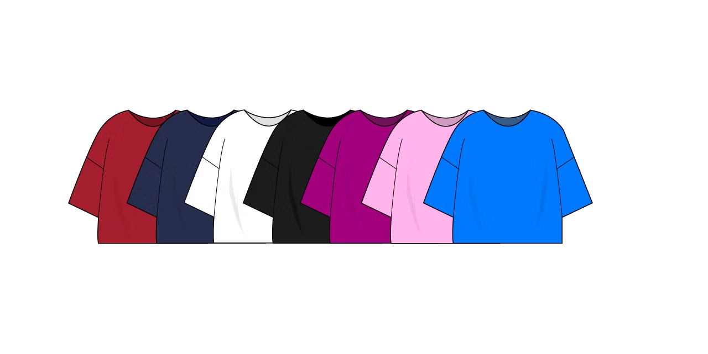
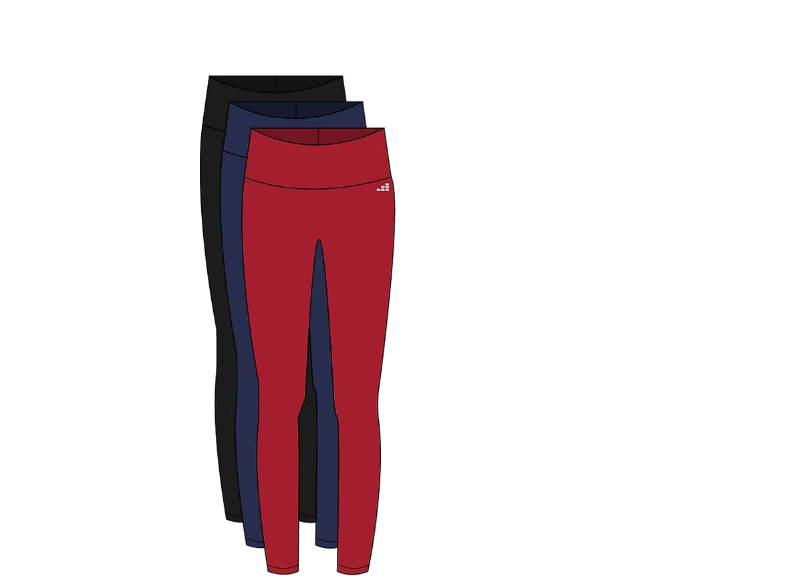
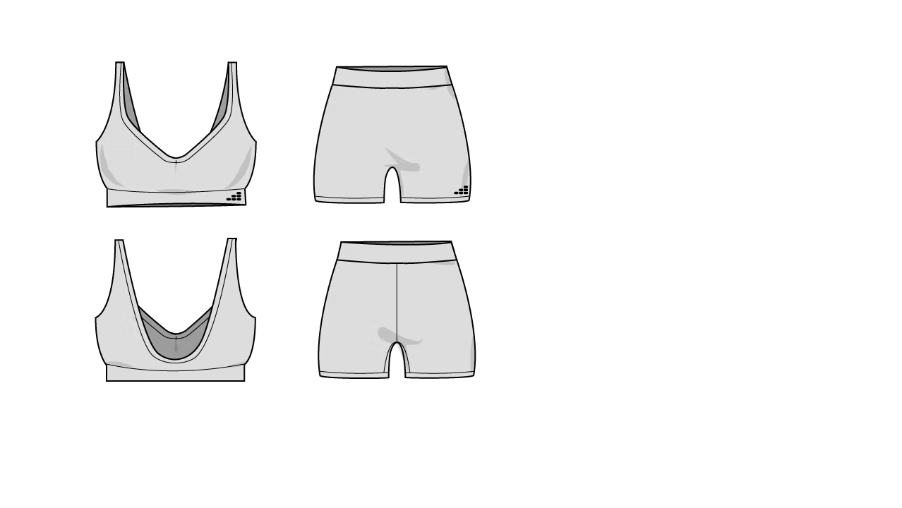
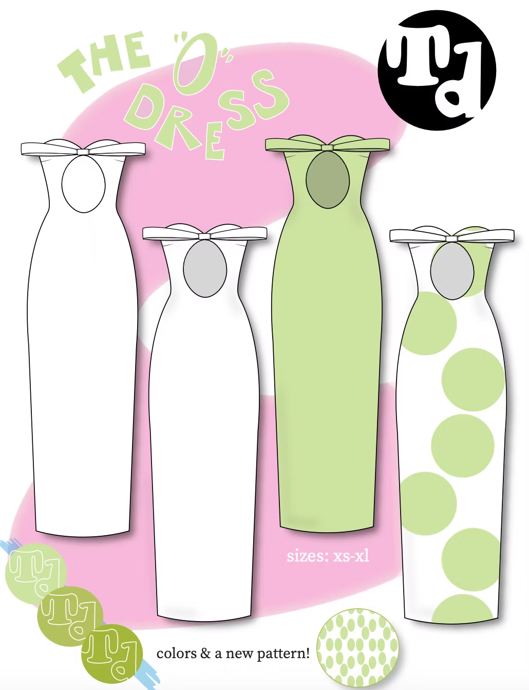
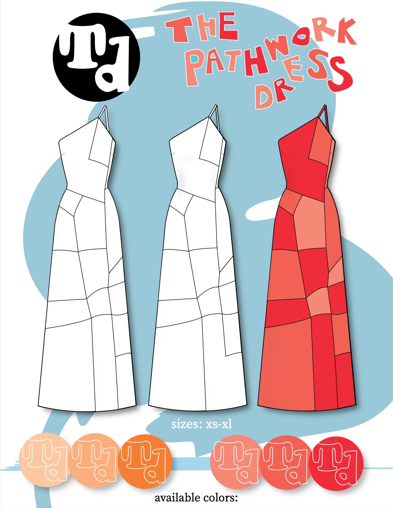
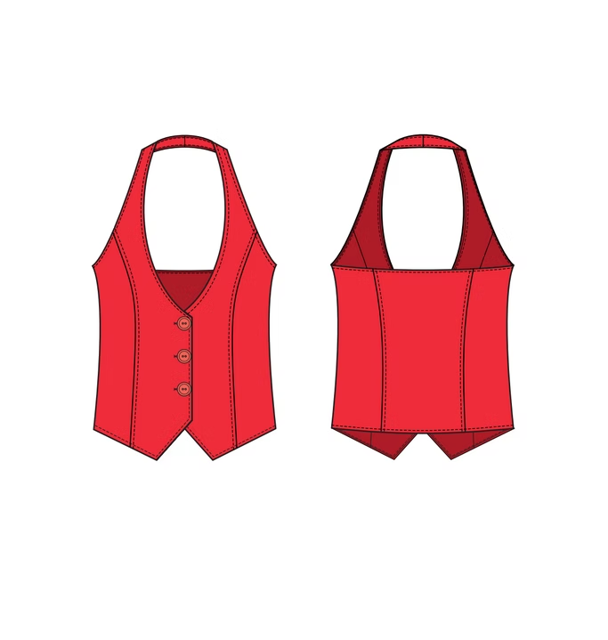
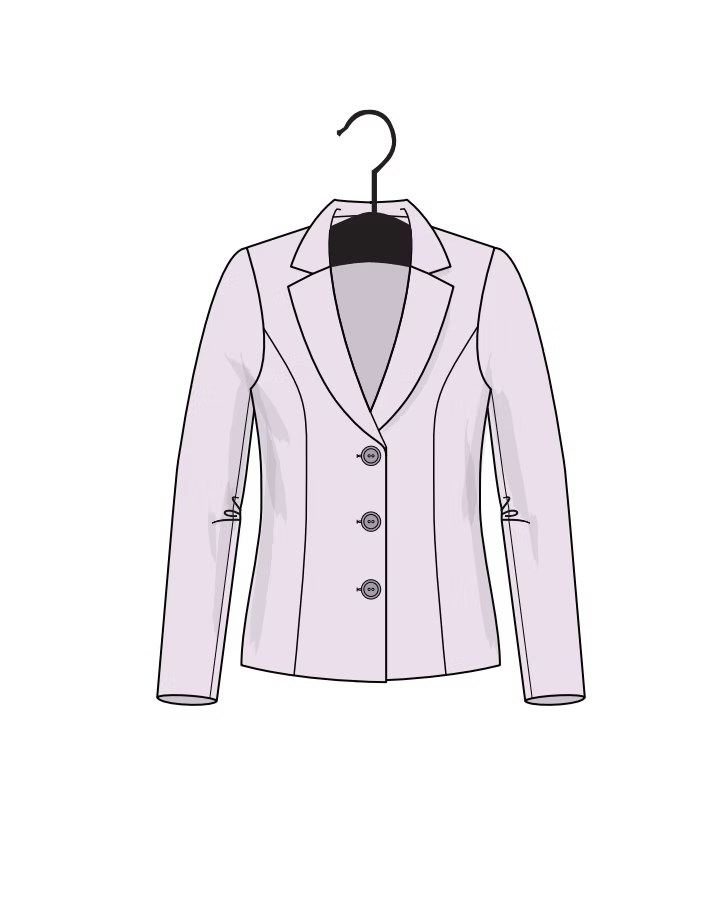
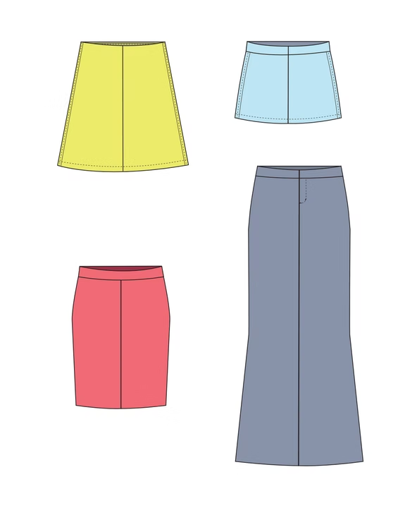
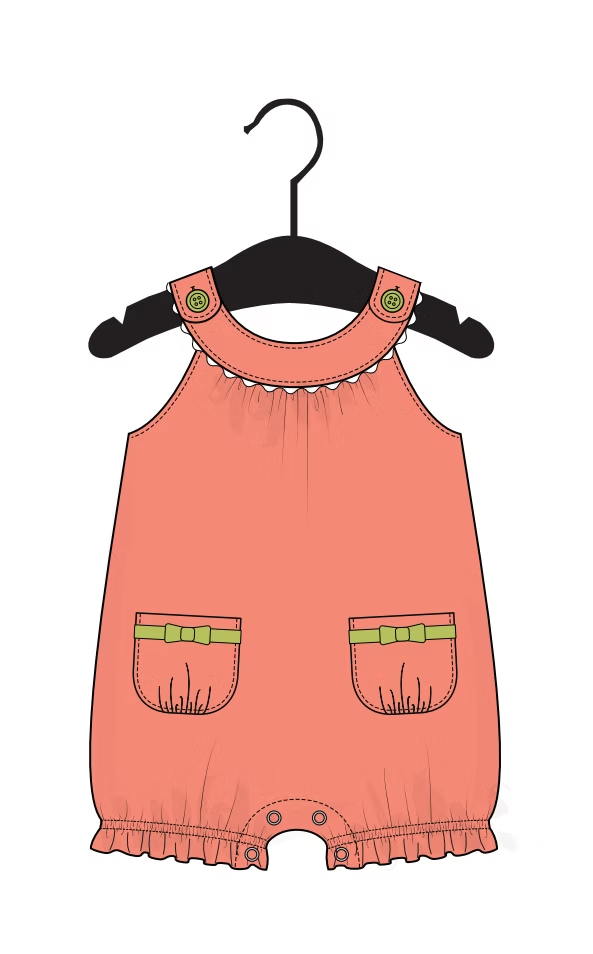

Technical Flats
Mock flats for Academy Sports + Outdoors
Objective: During my summer internship at Academy Sports + Outdoors, I created mock technical flats as part of a proposed seasonal assortment for the women’s apparel category. This project was developed for my final intern presentation, delivered to the merchandising and executive teams.
The goal was to showcase assortment planning, product design alignment with brand identity, and market relevance. I utilized Adobe Illustrator to design technical flats that highlighted silhouette, fabric direction, and color application.




Skills Learned:
- Technical flat drawing in Adobe Illustrator
- Assortment and line development
- Trend and consumer analysis
- Visual presentation and communication to executives
Catalogue Project
Objective: To design a catalogue layout featuring technical flats of a garment concept, incorporating original prints, patterns, and a custom logo. The project was created entirely in Adobe Illustrator to demonstrate proficiency in digital illustration and fashion presentation.


Skills Learned:
- Digital fashion illustration and technical flat creation
- Print and pattern integration
- Branding and layout design
- Color theory and collection coordination
Other Technical Flat Projects
Objective: Throughout my time in college I worked to create multiple technical flats to translate consistent design language across varied target markets—men’s, women’s, and youth—while adapting fit, style, and function to meet the needs of each consumer segment.




Skills Learned:
- Organization and timeliness
- Multi-category flat sketching in Adobe Illustrator
- Garment proportion and grading considerations
- Gender- and age-specific design adaptation
- Collection consistency and visual presentation